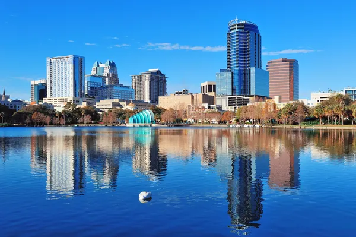

Japón

Japón, el país del sol naciente es uno de los destinos preferidos entre aquellos que desean viajar en el tiempo y conocer una cultura milenaria que, además de sorprender, enamora. El país nipón nos ofrece desde los antiguos vestigios del Imperio del Sol Naciente en toda su plenitud, hasta los mayores avances de las sociedades contemporáneas. Conoce Tokio una de las ciudades más pobladas del mundo y la más visitada de Japón, y en ella encontramos la cultura más vanguardista y tecnológica del planeta, todo ello mezclado con los más importantes monumentos del país como el Palacio Imperial. Visita el lago Kawaguchi, desde donde podrás disfrutar de las mejores vistas del monte Fuji, particularmente impresionantes durante la temporada de los cerezos en flor a mediados de abril y los colores otoñales alrededor de la primera quincena de noviembre.
| Sitio | Japón | ||
|---|---|---|---|
| Fechas | 12/06 | 05/08 | 13/09 |
| Precio | 2000€ | 3000€ | 1500€ |
New York

Dicen que viajar a Nueva York es como convertirte en el protagonista de tu propia película. Revivir, esta vez en primera persona, todos aquellos monumentos que ya has visto miles de veces en tu pantalla, pasear por sus diferentes distritos, dejarse impresionar por sus luces y su diversidad multicultural. La estatua de la Libertad, las vistas desde el Empire State Building, el centro del mundo en Times Square, la Avenida Broadway y sus musicales, el Puente de Brooklyn, el Edificio Flatiron, la catedral neogótica de San Patricio, Chinatown, Central Park… Nueva York deja marca y estará siempre esperando a que vuelvas a pisar sus frenéticas calles llenas de miles de historias por descubrir.
| Sitio | New York | ||
|---|---|---|---|
| Fechas | 12/06 | 05/08 | 13/09 |
| Precio | 1200€ | 2200€ | 900€ |
Orlando
La diversión está garantizada en los parques de Orlando Para tu sorpresa, Orlando es uno de los rincones del planeta que mayor número de parques de atracciones posee. Indudablemente, las miradas se centran en los dos mayores complejos del mundo en el que podrás disfrutar de infinidad de mundos temáticos y atracciones de lo más revolucionarias que no pasarán desapercibidos para ningún turista. Hablamos de Walt Disney World® Resort y de Universal Orlando Resort, que te adentrarán en alocadas aventuras.
| Sitio | Orlando | ||
|---|---|---|---|
| Fechas | 12/06 | 05/08 | 13/09 |
| Precio | 1600€ | 2400€ | 1100€ |